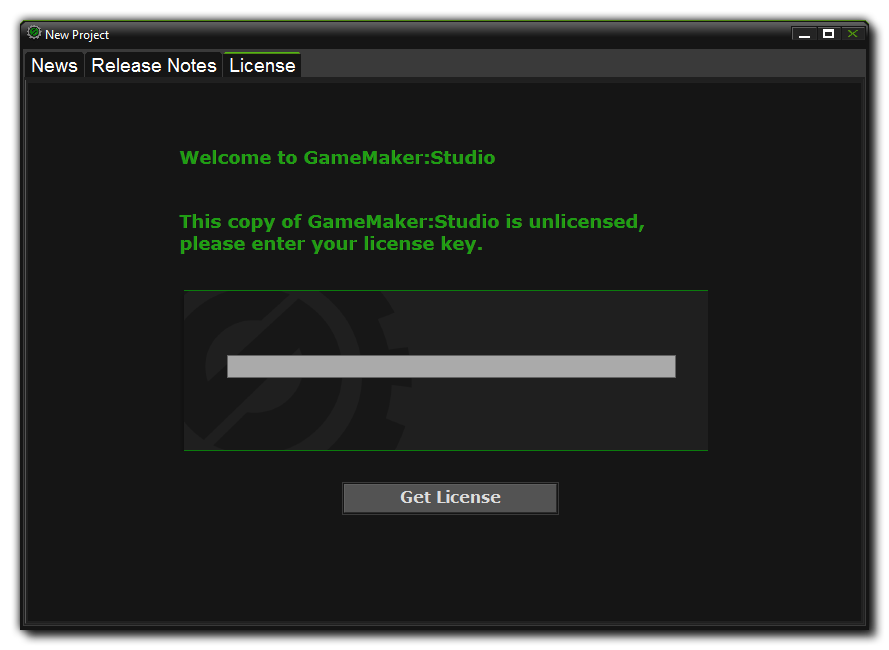

Once you have installed your version of GameMaker:Studio you will be prompted to enter a License Key the first time you run the program (unless you have downloaded the
free version or you have bought the program through Steam in which case this step can be skipped as your licence is tracked by Steam for you).
The license file will also be emailed to you using the email address you entered during purchase, and if you've
logged into the YoYo Games store through the "My Account" section, it will also be tied to that account, allowing you to retrieve it at any time should that be necessary. If you don't have a YoYoGames login,
the email will also contain details of the new account that has been automatically setup using the email address you have provided. This will, again, let you retrieve your GameMaker:Studio License code from
the YoYoGames website. Once you have completed the licence process, GameMaker:Studio will be ready to use!
If at anytime in the future you need to re-install GameMaker:Studio, the latest version, complete with all available updates, can always be found
here.
It is your responsibility to make sure you save the email, and the Licence Key itself, as you will need it anytime you want to reinstall GameMaker:Studio.

While GameMaker:Studio itself does not require an internet connection to be used, it will require occasional access to maintain the license activated. If you cannot connect your computer to the internet for any long period of time, you can download the license check file from the YoYo Games website, and then point the auto update system to it. If you fail to provide a valid license file, or there is no internet connection when requested, your copy of GameMaker:Studio will not work until such time as this is resolved.
NOTE : These extra modules can only be bought if you have already upgraded to GameMaker:Studio - Professional.
GameMaker:Studio comes with two export options included when you buy it : Windows and Mac OSX (and Steam Workshop if you bought the program from Steam). However the additional modules can be
purchased easily from YoYo Games Checkout. Once there, all you have to do is fill in the required
information (e-mail address and GameMaker:Studio base license), then select the target module or modules that you wish to add. Once this has been done, clicking "Proceed" will take you to the
purchase page of Google Checkout to confirm the sale. Finally, once confirmed, you will be given the new license and an email with it will be sent to the address you have given.
To use this License, you must now start GameMaker:Studio and go to "Help", "Update License" and enter your new license in the appropriate area. Once that is done, you should close GameMaker:Studio
and re-start it to enjoy the functionality of the new modules that you have purchased.
If you bought GameMaker:Studio through Steam you can also purchase these modules easily on-line from the same service, with no licence being required as Steam keeps track of your details
for you. To access the available modules, you must run your Steam Client, go to the Library and right click on the GameMaker:Studio entry. From the right click menu that pops up you should select the
option View Downloadable Content which will open the application Properties window and there you can select, buy and install the module of your choice.